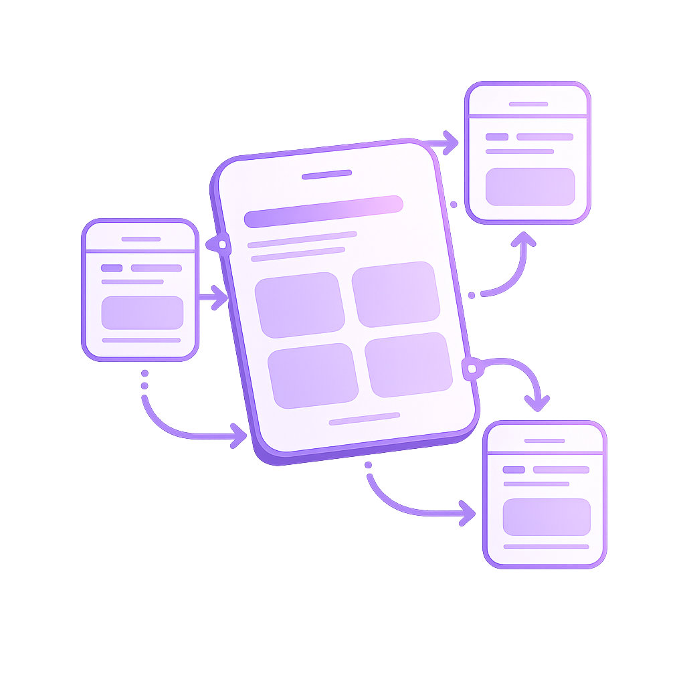
UX/UI Design
User flows, wireframes, prototypes, and clean interface design.
I’m Ruba Alghamdi, a UX/UI designer with a Computer Science background. I create clean, usable interfaces and understand how design decisions connect to real implementation.

User flows, wireframes, prototypes, and clean interface design.
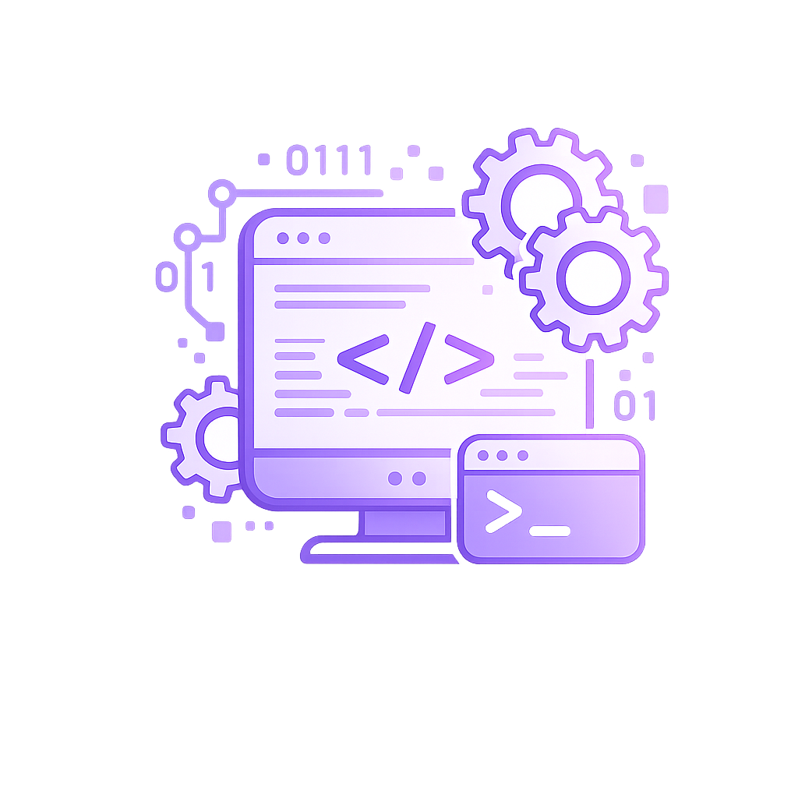
HTML, CSS, Java, Swift, Python, and MySQL.
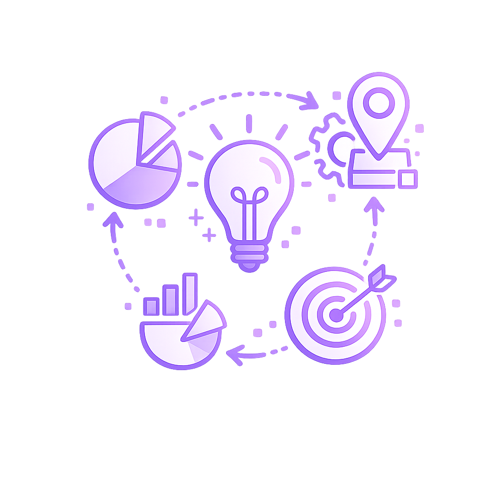
Designing around real problems, goals, and constraints.
A collection of interface and product design projects focused on clarity, usability, and user-friendly digital experiences.
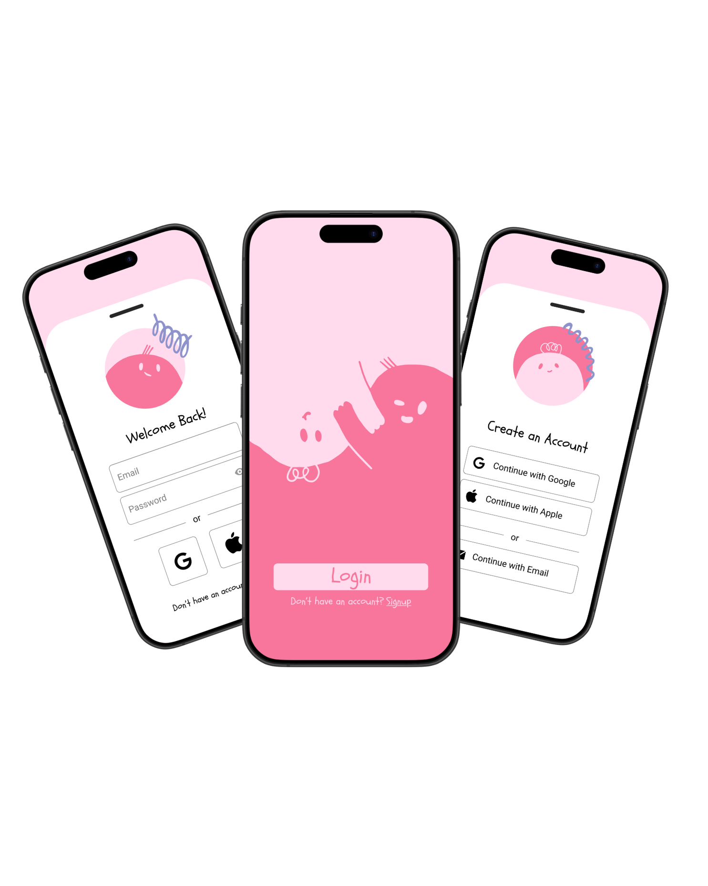
A smooth and secure onboarding and login experience for mobile users.
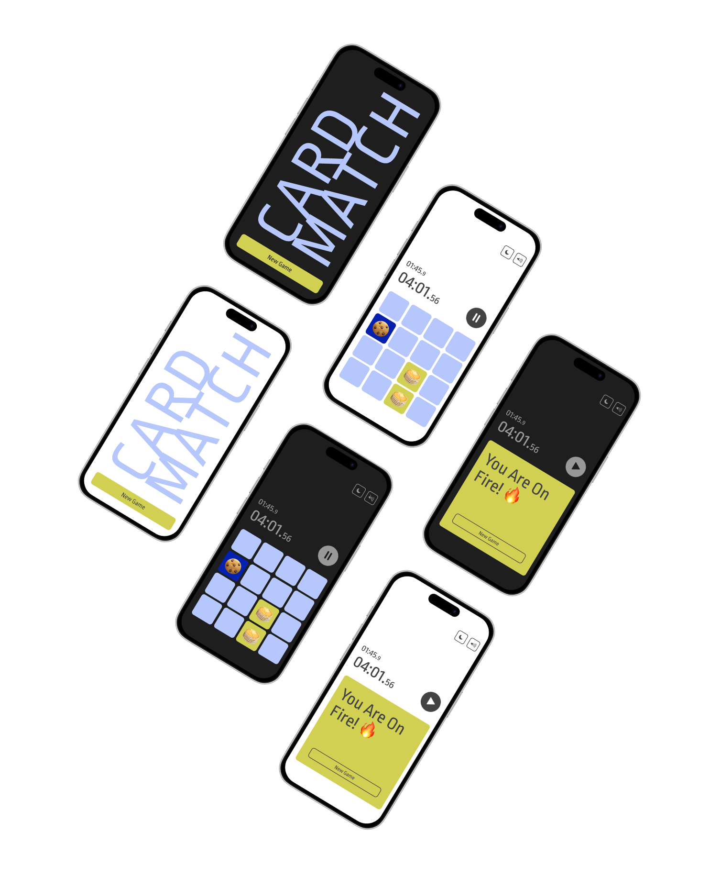
A minimal and engaging memory game interface focused on clarity and usability.
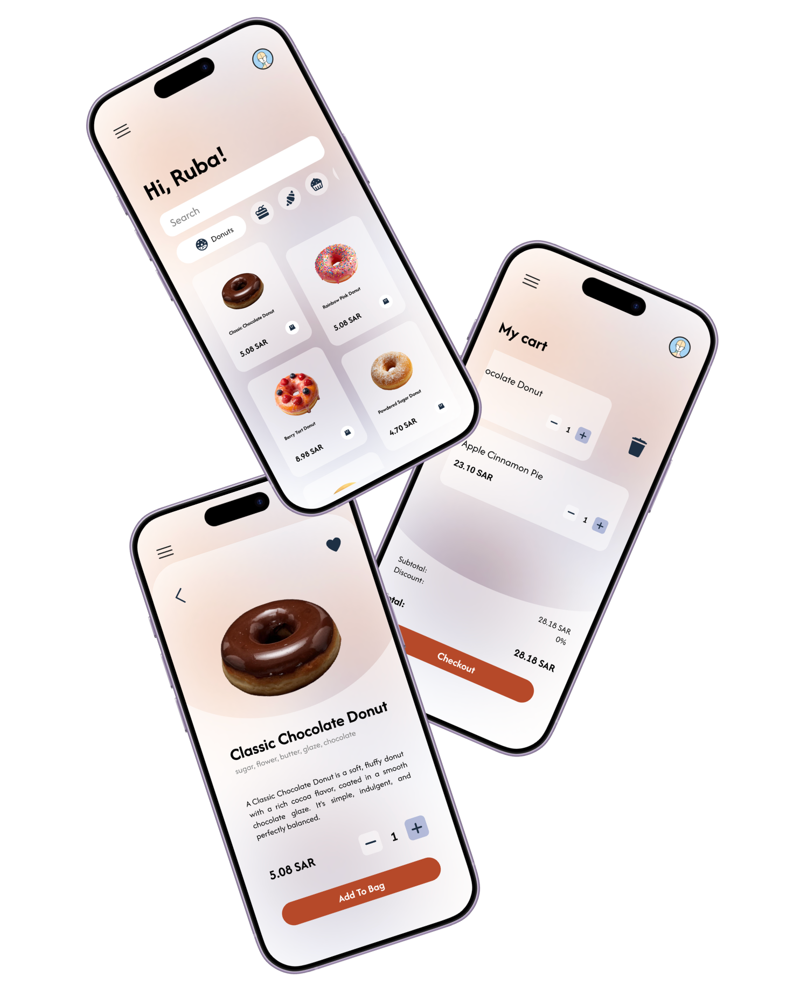
A clean mobile shopping experience focused on product browsing and quick purchasing.
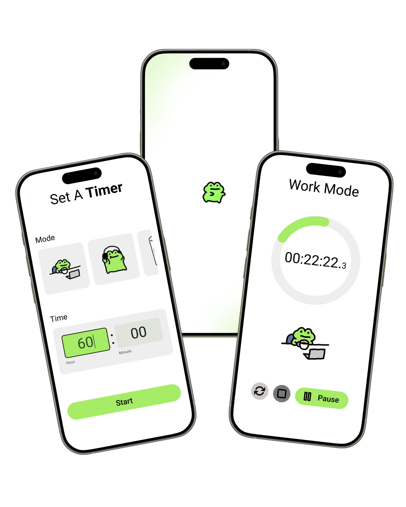
A playful productivity timer designed to improve focus and user engagement.
I design digital products with a balance of usability, visual clarity, and technical awareness. My Computer Science background helps me think beyond screens and understand how design decisions affect real implementation.
Download CVA smooth and secure onboarding and login experience for mobile users.
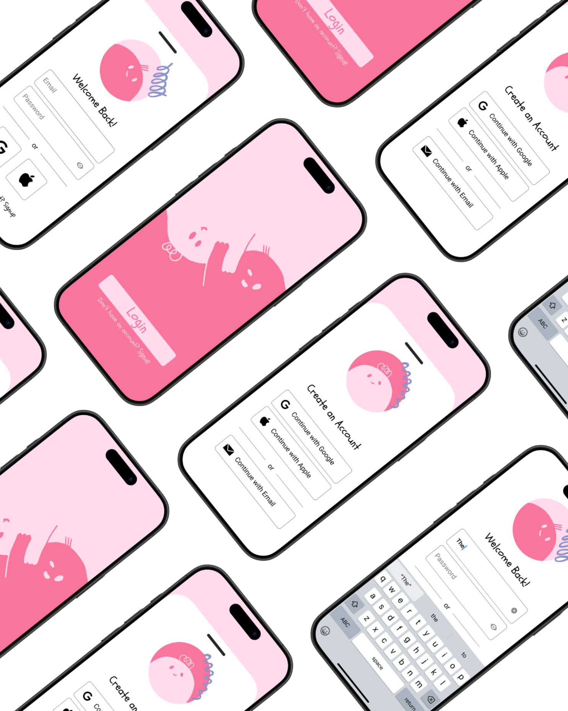
This onboarding and authentication flow was designed in Figma with a focus on clarity and ease of navigation. Inspired by a concept I saw on Pinterest, I illustrated the characters myself, converted them into vectors, and integrated them into the interface to create a friendly visual identity. The layout follows familiar authentication patterns and clear visual hierarchy to guide users smoothly through sign-up and login. Reusable components and simple interactions were used to maintain consistency and simulate navigation in the prototype.
A minimal and engaging memory game interface focused on clarity and usability.
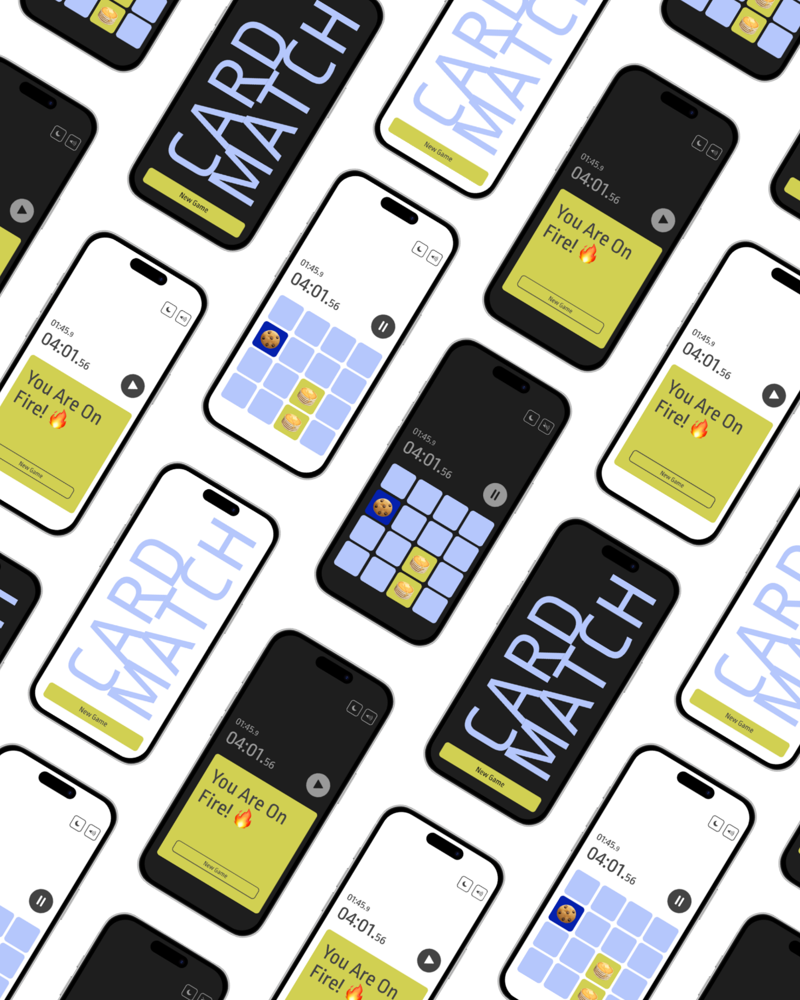
This mobile game interface was designed in Figma, inspired by a concept I discovered on Pinterest which I used as a starting point to explore game UI structure. I recreated the layout while adapting the color system and visual elements, and designed both light and dark modes to improve accessibility and visual comfort. The interface focuses on clear hierarchy, minimal distraction, and quick interaction, allowing users to easily focus on gameplay. Components and simple interactions were prototyped to simulate the game flow from start screen to win state.
A clean mobile shopping experience focused on product browsing and quick purchasing.
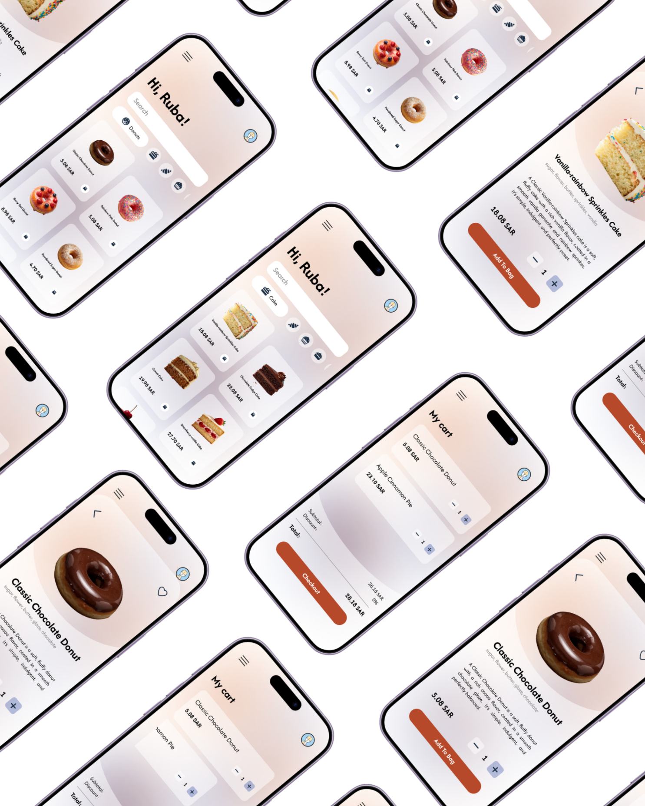
This mobile e-commerce interface was designed in Figma to explore a clean and intuitive food ordering experience. The layout focuses on clear product hierarchy, visual emphasis on imagery, and simplified navigation to help users quickly browse items and add them to their cart. Product cards, detail pages, and the checkout flow were structured using consistent components and spacing to maintain usability across screens. The goal was to create a friendly shopping experience where users can easily discover products and complete purchases with minimal friction.
A playful productivity timer designed to improve focus and user engagement.
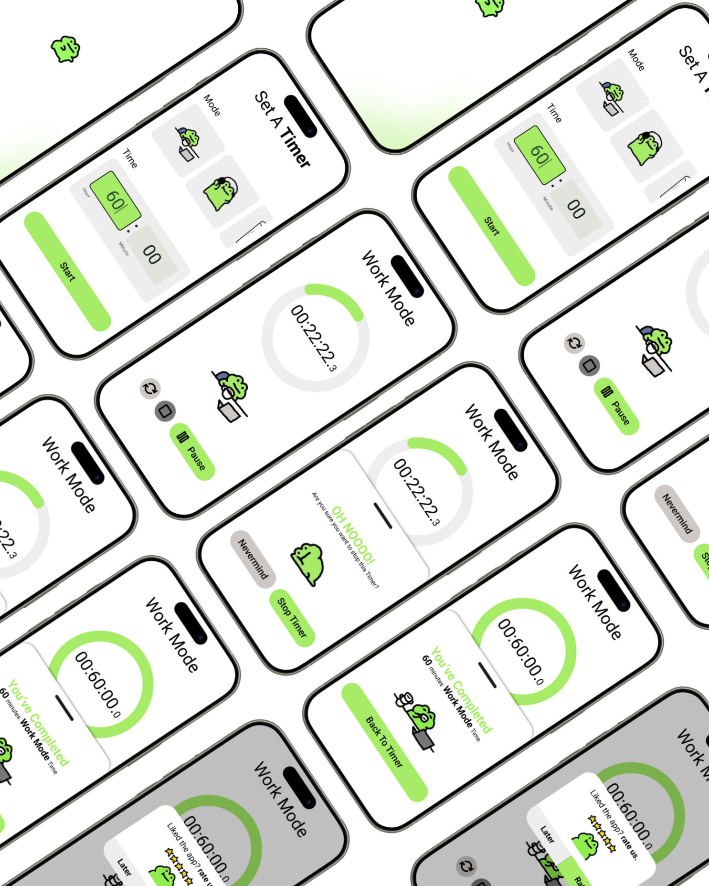
This concept timer app was designed in Figma to explore how playful illustration can enhance user engagement in productivity tools. After discovering the frog character on Pinterest, I built a simple timer experience around it, using the character to communicate states like focus, stop, and completion. The interface follows clear visual hierarchy and minimal controls to keep the interaction simple and distraction-free. Components and prototype interactions were used to simulate the full flow from setting the timer to completing a session.